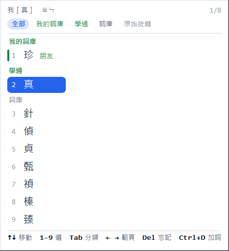
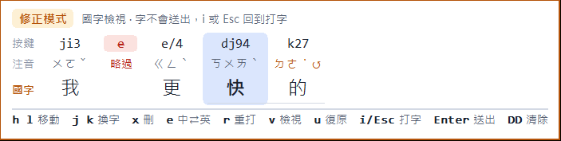

一般
每一種打字方式自成一張卡片：右邊的開關決定它在不在 Shift 的輪流裡，點卡片展開它自己的細部設定。用不到的關掉就好，裡面的設定不用管。
i am a good guy 維持英文；你想我i␣ 變成「你想我喔」。關閉後單一字母一律當英文。中文後面先打空白再打字母，會當成英文（第 i 項）：空白就是你的分隔記號。注音的鍵盤、容錯設定在下面「注音」卡片，混用注音時一樣適用。
藍色是聲調鍵。
k27→的、8a3→碼、ij3→我。解碼面板以琥珀色 ↺ 標出。我e更快→我更快。被略過的鍵在解碼面板以紅色刪除線標出，也可從候選窗「原始按鍵」找回。保守：只略過很明顯多按的鍵。連著打，不用打聲調（women → 我們）；要指定聲調時在音節後打 1–5（ma3 → 馬，5 是輕聲）。ü 打 v（lv → 綠），' 分開音節（xi'an），空白結束一個詞。
, . ; 在拼音裡是全形標點（，。；），不是字母。
打碼後按空白出字；連打幾個字時會用詞頻挑重碼字（hqi␣oan␣ → 我們）。還沒按空白時，提示框顯示字根和會出的字。字根對照：
碼表來自「倉頡五代補完計劃」（MIT 授權），重碼依台灣常用字排序。
純英文模式不組字，所有按鍵（含 Ctrl+符號）都直接交給程式。只是偶爾打一個英文詞的話，不必切換：中英自動會自己判斷，或打 Caps Lock 直接打大寫。
Shift 輪流
打字與選字
打字時旁邊的提示、Tab 接續，以及候選窗的樣子。
預覽
黃框是打字時的提示與接續建議；選字時的候選窗見下方「順打面板」。
提示
Tab 接續
順打面板

候選窗由輸入法自己畫：綠色是你自己的詞（我的詞庫、學過），一組一組排好；Tab 只看某一組。黃色提示框還是會在，面板貼在它下面。
實驗功能 實驗
還在試的功能，預設關閉。覺得不好用就關掉，不影響其他功能。
候選窗與送出
智慧修正
打快時的錯誤會自動修好；修不好的，用候選窗或修正模式手動改，改過的會記成詞。
注音順序容錯、略過多按的雜鍵、單一字母判斷，是各打字方式自己的設定，搬到「一般」裡對應的卡片（注音、中英自動）。
學習
修正模式（類似 Vim） 即將推出
組字中按 Esc 進入修正模式：旁邊出現琥珀色外框的解碼面板，三列對齊顯示「按鍵 → 注音 → 國字」，被略過的雜鍵、順序被修正的音節都看得到。手不用離開主鍵區就能直接修改；只有 i／Esc／Enter／DD 這些明確的指令才會離開。

紅色刪除線＝被當成雜鍵略過的鍵；琥珀色 ↺＝順序打反、已照正確順序讀；藍色底線＝你自己選的字；綠點＝我的詞庫／學過。
| 按鍵 | 動作 |
|---|---|
| h l | 移到上一個／下一個字 |
| j k | 直接換成下一個／上一個候選（不開視窗） |
| v | 切換顯示：國字 → 注音 → 按鍵 |
| x | 刪掉游標上的字；在「按鍵」檢視時只刪一個鍵（例如那個多按的 e） |
| e | 這段在 中文 ⇄ 英文 ⇄ 原始按鍵 之間切換 |
| r | 重打這一個字（其他字不動，打完自動回到修正模式） |
| a | 把游標前的詞加入詞庫 |
| u | 復原上一步（和打字時的 Ctrl+Z 同一份紀錄；Ctrl+Y 重做） |
| i 或 Esc | 回到打字（字都還在）；Enter 送出整段 |
| D D | 清除整段（要連按兩次，不會送出） |
標點與符號
鍵盤上每個符號鍵，單按、Shift、Ctrl、Ctrl+Shift 各打出什麼，都在下面這張表。看得到的符號都打得出來，同一個鍵的四種按法不會重複。
符號鍵的四種按法
| 鍵 | 單按 | Shift | Ctrl | Ctrl+Shift |
|---|
- Ctrl、Ctrl+Shift 兩欄可以直接改（每格一個字）；清空＝這個組合交給程式（例如 VS Code 的 Ctrl+\ 分割編輯器），↺ 恢復預設。只在中文模式有效，純英文模式的 Ctrl 組合鍵一律交給程式。
- 黃底＝同一個鍵有兩種按法打出一樣的字（可以改掉，多放一種符號）。
- 打錯寬度時，游標停在標點後按 ↓，全形、半形和相關符號都在選字框裡（表中「↓ ，」）。例外：，。？！：； 預設會立刻把整段送出，之後就不能再按 ↓ 換——可到「打字與選字」關掉「句讀標點自動送出」。
符號面板 即將推出
單按一下右邊的 Ctrl 打開面板，再按一次關閉（按住右 Ctrl 仍是語音輸入；` 保留給你框程式碼）。Tab 換分類、Shift+Tab 上一類、1–9 或方向鍵選。沒在打字時選的符號會直接打出來。
希臘字母、數學符號、箭頭、單位（℃、㎡、％）都在這裡，不用記快捷鍵。常用的符號會自動排前面。
為什麼不是 Ctrl+Alt+符號？
Windows 不會把「按住 Alt 時按的鍵」交給輸入法，所以 Ctrl+Alt+, 這類組合在這個輸入法收不到。Alt、Ctrl 單獨按一下則收得到，因此用「單按右 Ctrl」（或右 Alt）開符號面板。全形／半形用上面的設定或候選窗 ↓ 切換。
我的詞庫
輸入法自動收集的詞，和你自己整理的詞，分成兩區。自動收集的詞給它一個分類，就成為「我的詞庫」的一員；朋友的名字放進「朋友」分類，打注音時排第一，不用每次找半天。
新增詞
也可以在打字時加詞：打好、修好後按 Ctrl+D 把游標前的中文加入詞庫；在候選窗按 Ctrl+D 加入選中的詞。英文詞（例如 vscode）直接輸入即可。
詞條
分類
候選窗會在詞旁標上分類，例如「陳怡君 朋友」。刪除分類不會刪除裡面的詞。
片語與顏文字
常用的一段話——罐頭訊息、地址、簽名、同一類業務的回覆——存在這裡。打字時打 ;;（可以接著打關鍵字篩選），選中時先在面板預覽全文，按 Enter 才打出來。也可以單按右 Ctrl 打開符號面板，在「片語」分頁選。
新增片語
關鍵字用英文字母最快：打 ;;addr 就只剩下關鍵字是 addr 開頭的片語。沒有關鍵字也可以，從清單選。
我的片語
叫出方式
;; 也可以。拼音、倉頡模式的 ; 是全形標點，請用符號面板的「片語」分頁。顏文字
單按右 Ctrl 打開符號面板，Shift+Tab 就到「顏文字」分頁：依心情分組（開心、喜歡、難過、生氣、驚訝、無奈、害羞、打招呼、謝謝抱歉、加油、睡覺、動物……），最近用過的排在最前面。
我的符號
網路上收藏的顏文字、特殊符號，貼在這裡就能在打字時用—— 打 ::: 開啟符號面板後 Tab 到「我的符號」分頁選， 最近用過的排最前面。
一行一個——有些顏文字本身就帶空白，用空白分隔會拆散它。重複貼上的會自動略過。
更多符號
快捷鍵
可以調整的按鍵放在最上面；下面是打字時能用的所有按鍵。
可以調整的按鍵
std::vector 照常打得出來。全部按鍵
| 情境 | 按鍵 | 動作 | 狀態 |
|---|
語音輸入
按住右 Ctrl 說話，放開就把文字打到游標位置，任何程式都可以用。全部在你的電腦上辨識，聲音不會上傳；只有按住時麥克風才會開啟。
語音輸入需要另外安裝辨識元件（不需要系統管理員權限）：下載約 110 MB、占用約 350 MB；有 NVIDIA 顯示卡時另外下載約 1.3 GB 的 CUDA 元件（占用約 1.8 GB），辨識快很多。
語音輸入
模型
| 模型 | 說明 | 大小 |
|---|
模型存在 %LOCALAPPDATA%\SmartIME\models，只需下載一次。
資料與隱私
你的設定和學到的詞都存在這台電腦，不會上傳。可以匯出帶到另一台電腦。
我的記憶
同一個詞選再多次也只占一筆（只增加次數），所以檔案隨「不同的詞」成長，一萬個詞約 1–2 MB。只用過一次、超過 4 個月沒再用的學習紀錄會自動清掉；自己加的詞和封鎖的詞不會。
除錯紀錄 目前開啟
關於
順打輸入法 。免切換中英混打的注音輸入法。
版本與更新
開發者
使用的資料與元件
| 元件 | 用途 | 授權 |
|---|---|---|
| 小麥注音詞庫（McBopomofo） | 中文詞與詞頻 | MIT |
| wordfreq | 英文詞頻 | 資料 CC BY-SA 4.0 |
| PIME | Windows 輸入法框架 | LGPL 2.1 |
| Python embeddable | 輸入法引擎執行環境 | PSF |
| 倉頡五代補完計劃 | 倉頡五代碼表 | MIT |